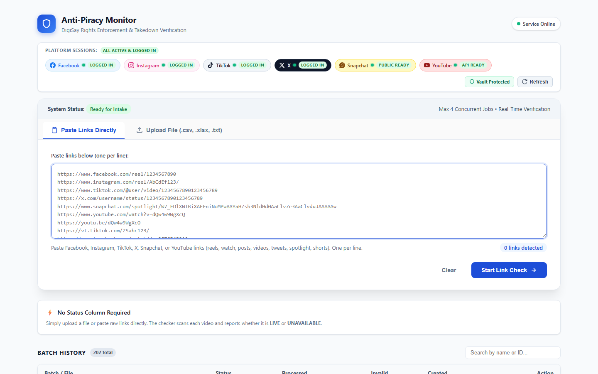

Enterprise Production Systems
Proprietary production systems engineered for DigiSay operations. Built for high throughput, strict session security, and 24/7 uptime.

Content Delivery & Clockify Intelligence
Full-stack workforce analytics engine indexing 136,000+ time entries across 175 contributors. Features Tabulator virtual scrolling, automated multi-team workload balancing, burnout risk heuristics, and an embedded natural language SQL querying agent for executive reporting.

Anti-Piracy Monitor & Batch Link Checker
Automated multi-platform infringement verification engine across Facebook, Instagram, TikTok, and X. Operates a multi-worker Playwright browser pool with session vault synchronization, cookie keepalive heartbeats, and instant generation of "takedowns not landed" audit manifests.
YouTube Content ID & Multi-CMS Ingest
Rights management pipeline managing catalog assets across 380+ channels. Triangulates ownership conflicts, patches monetizing policies across rotating OAuth quota pools, and streams daily 9+ GB CSV report dumps into indexed SQLite tables.
MBC Multi-Platform Whitelist & Audit Engine
Automated compliance system transforming Airtable records into a synchronized Google Sheets matrix every 20 minutes. Resolves 1,275+ Facebook numeric redirects via browser automation and captures 94 automated high-res viewport screenshots daily.
CMS Asset Label Database & Auditor
Audits and resolves labels across 380+ YouTube partner channels. Detects intra-CMS typos using Levenshtein distance (85%+ similarity threshold), flags cross-CMS duplicate claims to prevent misattributed royalties, and syncs four formatted audit tabs to Google Sheets.